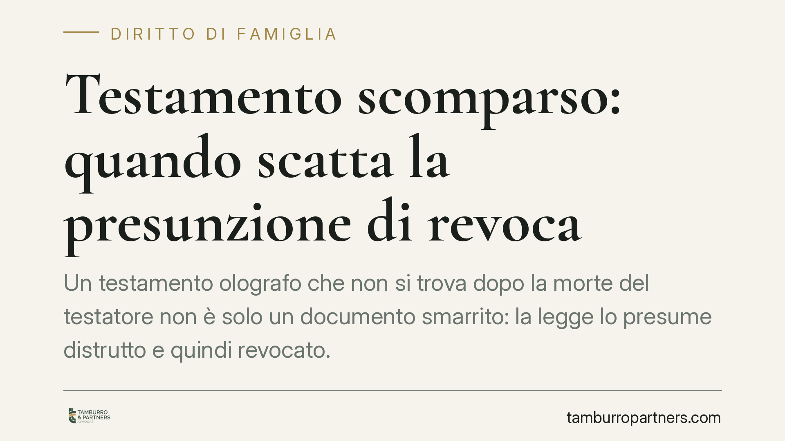

Testamento scomparso: quando scatta la presunzione di revoca
Un testamento olografo che non si trova dopo la morte del testatore non è solo un documento smarrito: la legge lo presume distrutto e quindi revocato. Una recente pronuncia di merito ribadisce questo principio e chiarisce che la fotocopia, da sola, non basta a recuperarne l'efficacia. Un tema che tocca da vicino chi conta su disposizioni di ultima volontà non depositate.

Il caso: un testamento olografo mai ritrovato
Un testamento scomparso dopo l'apertura della successione pone subito un problema delicato. Chi lo aveva visto, chi ne conserva magari una fotocopia, si attende che quelle volontà vengano rispettate. La legge, però, impone un percorso probatorio preciso.
Il Tribunale di Firenze è tornato sul punto (sentenza del 2024, estremi da_verificare), in una vicenda che vedeva contrapposte un'erede e la nipote della defunta testatrice. L'erede disponeva solo di una copia fotostatica dell'olografo, mai rinvenuto in originale. Il Tribunale ha applicato la presunzione di revoca, respingendo la domanda: la fotocopia non ha superato la presunzione prevista dalla legge.
L'inquadramento normativo: art. 602 e art. 684 c.c.
Il testamento olografo è la forma più semplice di testamento. L'art. 602 c.c. richiede che sia scritto per intero, datato e sottoscritto di mano dal testatore. Proprio la sua natura manoscritta ne fa un documento fragile: può essere conservato in casa, dimenticato, perso o distrutto.
L'art. 684 c.c. disciplina la revoca per distruzione: "Il testamento olografo distrutto, lacerato o cancellato, in tutto o in parte, si considera in tutto o in parte revocato, a meno che si provi che fu distrutto, lacerato o cancellato da persona diversa dal testatore, ovvero si provi che il testatore non ebbe l'intenzione di revocarlo".
Da qui un doppio passaggio presuntivo elaborato dalla giurisprudenza. Primo: se l'olografo non è reperibile dopo la morte, si presume che sia stato distrutto. Secondo: la distruzione si presume opera del testatore e, dunque, espressione della volontà di revocare. La presunzione di revoca ex art. 684 c.c. è costantemente richiamata anche dalla giurisprudenza di legittimità (orientamento Cassazione sul punto, da_verificare).
Perché la fotocopia non basta
La copia fotostatica attesta l'esistenza passata del documento, non la sua sopravvivenza né la volontà del testatore di mantenerlo in vita. Per superare la presunzione, chi invoca il testamento scomparso deve affrontare un onere probatorio articolato su tre fronti.
Primo profilo: provare che il testamento è effettivamente esistito con un contenuto determinato. La fotocopia può contribuire a questo, ma non esaurisce la prova.
Secondo profilo: dimostrare che la distruzione non è imputabile al testatore, bensì a un terzo o a un evento accidentale (un incendio, un allagamento, la sottrazione da parte di chi aveva interesse a eliminarlo).
Terzo profilo: provare, in alternativa, che il testatore non ebbe l'intenzione di revocare le proprie disposizioni, pur non essendo più l'originale reperibile.
Si tratta di un onere rigoroso, difficile da assolvere con una semplice copia. Ecco perché la presunzione di revoca, nella pratica, finisce spesso per prevalere.
Implicazioni pratiche: il rischio della custodia
La conseguenza è netta. Se il testamento non viene ritrovato e la presunzione non è superata, è come se non fosse mai stato scritto: si apre la successione legittima, con la divisione del patrimonio secondo le quote di legge e non secondo le volontà del defunto.
Il punto critico è la custodia. Un olografo tenuto in un cassetto è esposto a smarrimento, deterioramento e, nei casi peggiori, sottrazione da parte di chi avrebbe interesse a farlo sparire. Chi confida in un testamento mai depositato si assume, di fatto, questo rischio.
Cosa fare in concreto
- Verificare l'esistenza di un originale: la fotocopia è un indizio, non una prova piena; è opportuno accertare dove si trovi, o si trovasse, il documento manoscritto.
- Valutare il deposito dell'olografo presso un notaio: la custodia fiduciaria riduce il rischio di smarrimento e di contestazioni sulla reperibilità.
- Conservare elementi che attestino contenuto e integrità: testimonianze, corrispondenza, documenti che riconducano alla volontà del testatore possono rilevare in giudizio.
- Considerare la sostenibilità dell'onere probatorio: chi dispone solo di una copia deve essere consapevole della difficoltà di superare la presunzione di revoca.
- Chiarire per tempo le circostanze dell'eventuale distruzione: dimostrare che il documento è andato perduto per causa estranea al testatore è il perno dell'intera prova.
Disclaimer
Contributo informativo a cura di Tamburro & Partners Avvocati - Avv. Giuseppe Tamburro. Non costituisce parere legale.
Ogni famiglia ha il suo equilibrio.
Separazione, divorzio, affidamento, assegno: se vuoi un confronto riservato su una specifica situazione, scrivi allo studio. Ti rispondiamo entro un giorno lavorativo.